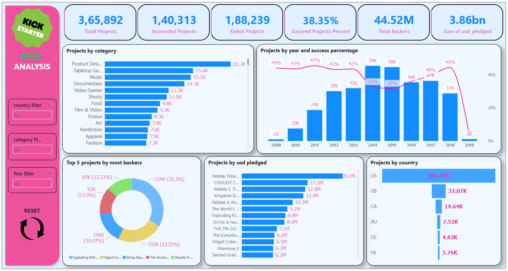
Power BI
Kickstarter Campaign Analysis
Analyzed 365K+ crowdfunding campaigns worth $3.86B to surface funding trends, category performance and success drivers.
View on GitHubSELECT * FROM analysts WHERE curious = true;_
Data Analyst working across SQL, Python, Excel, Power BI and Tableau. I build dashboards and reports that give stakeholders a clear next step, not just a chart.
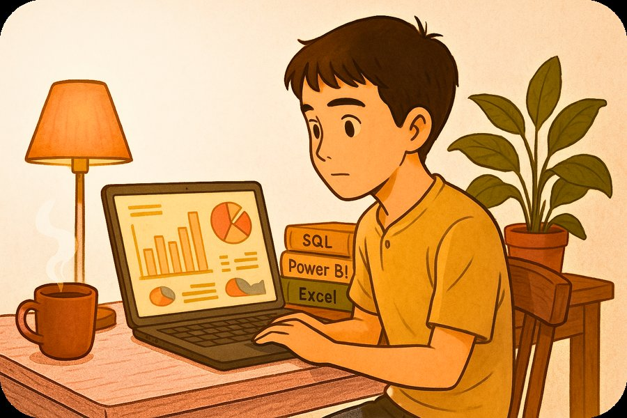
SELECT bio FROM about_me;
I'm a Data Analyst with hands-on experience across SQL, Python, Excel, Power BI and Tableau. My work ranges from cleaning messy source data to shipping dashboards stakeholders actually open every week.
Across three internships and client-facing roles, I've analyzed a 365,000-project Kickstarter dataset representing $3.86B in funding, built an automated job-market dashboard with a Python scraping pipeline, and managed large operational datasets while generating the highest individual brokerage on my team at NoBroker.
Whether the audience is an engineering team or a business stakeholder, my job is the same: make the insight impossible to misread.
SELECT tool, category FROM stack;
The tools I reach for daily, from first query to final dashboard.
MySQL · complex queries, joins & EDA on large datasets
Data cleaning, scraping & automated ETL pipelines
Advanced formulas, pivot modeling & reporting
Interactive dashboards, DAX & KPI reporting
Visual storytelling & geographic / trend analysis
SELECT * FROM projects WHERE impact = true;
Seven end-to-end analyses, from raw dataset to decision-ready dashboard.

Analyzed 365K+ crowdfunding campaigns worth $3.86B to surface funding trends, category performance and success drivers.
View on GitHub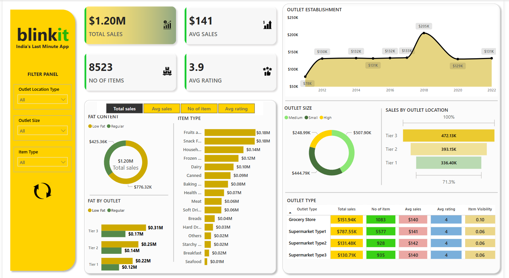
Interactive dashboard tracking $1.2M in sales across outlet types, tiers and item categories for a quick-commerce business.
View on GitHub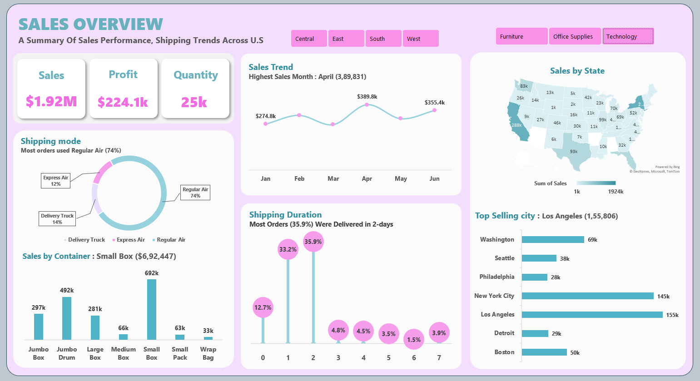
Fully interactive Excel dashboard revealing top states, shipping trends and product performance at a glance.
View on GitHub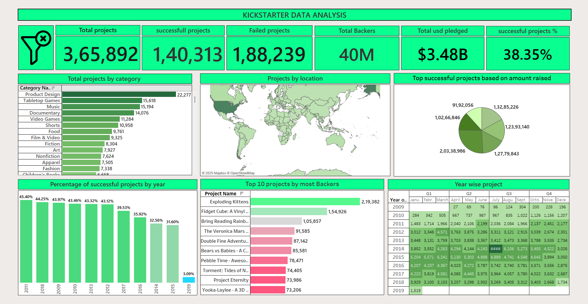
Visualized project trends, success rates and geographic distribution across the same Kickstarter dataset in Tableau.
View on GitHub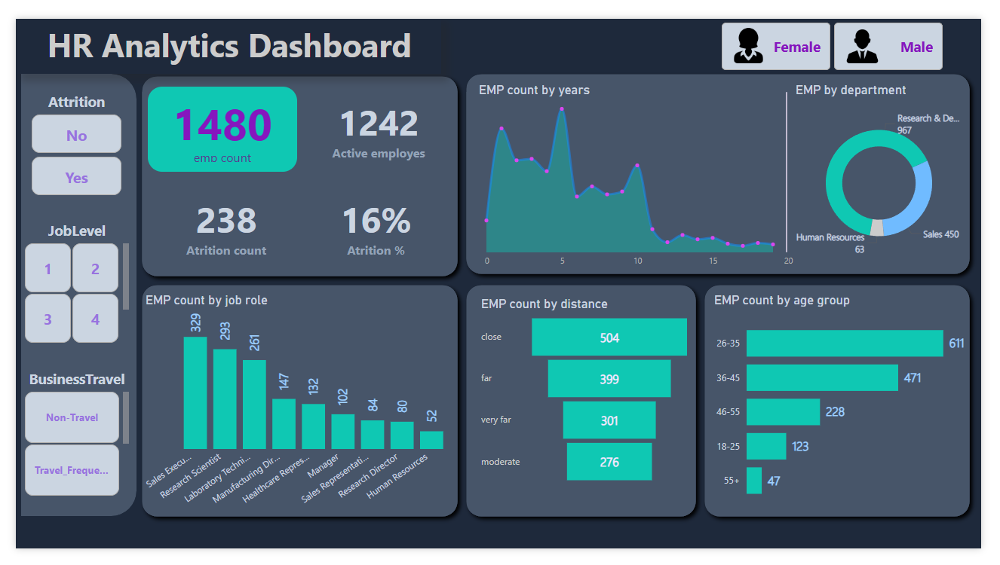
Tracked attrition across 1,480 employees, surfacing patterns by department, distance and age group for HR decision-making.
View on GitHub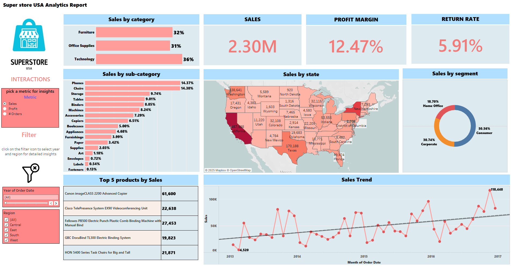
Dynamic dashboard for Superstore USA surfacing $1.92M in sales, regional trends and top-performing products.
View on GitHub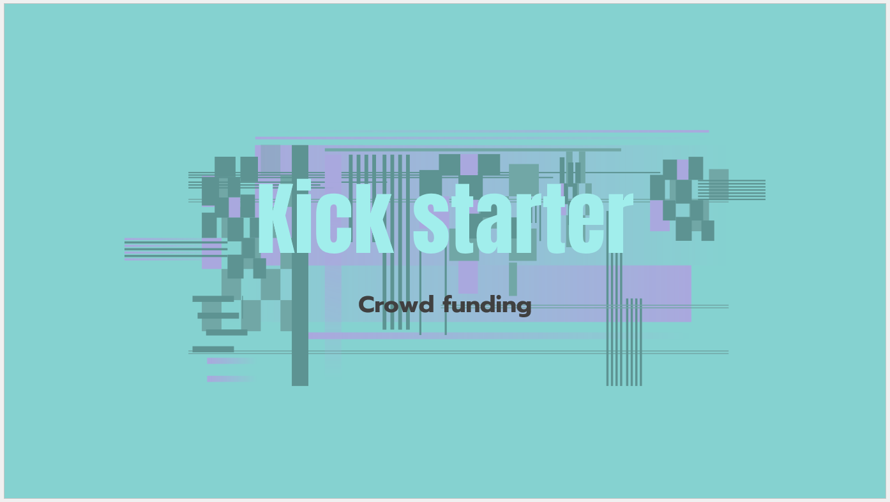
Query-driven analysis uncovering outcome trends, category success rates and geography across a decade of campaigns (2009-2019).
View on GitHubSELECT role, tools FROM experience ORDER BY date DESC;
Internships and client-facing work that shaped how I approach data.
NoBroker · Google Sheets, CRM
Unified Mentor (Remote) · Excel, SQL, Power BI, Python
AI Variant (Remote) · Excel, SQL, Power BI, Tableau
SELECT * FROM certifications;
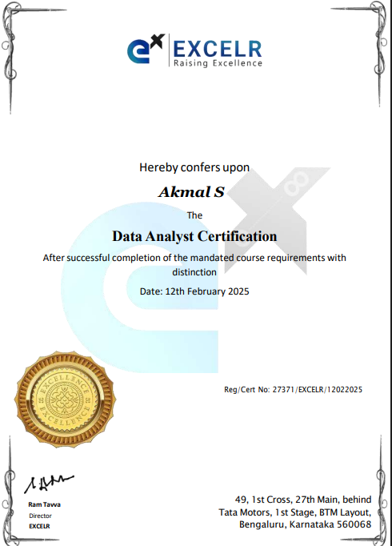
ExcelR · Feb 2025
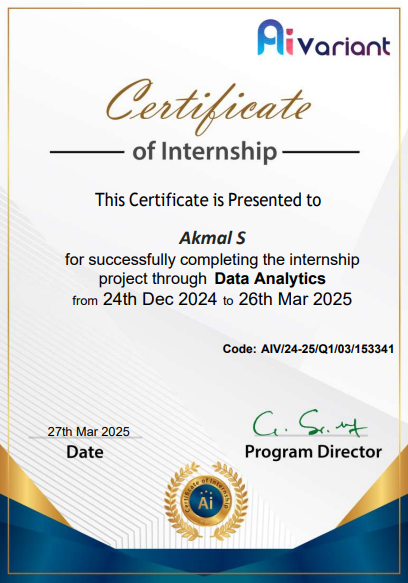
AI Variant · Mar 2025
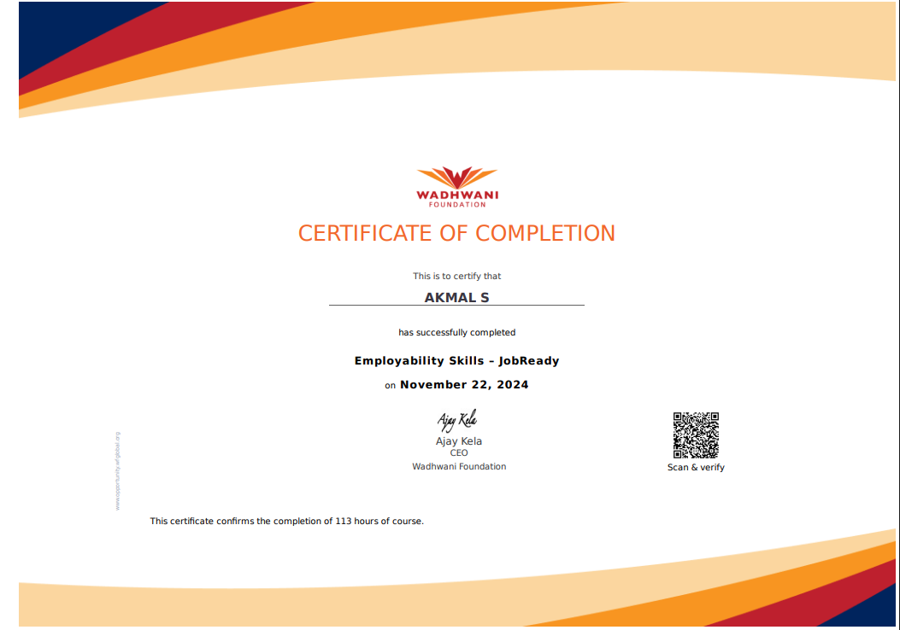
Wadhwani Foundation · Nov 2024
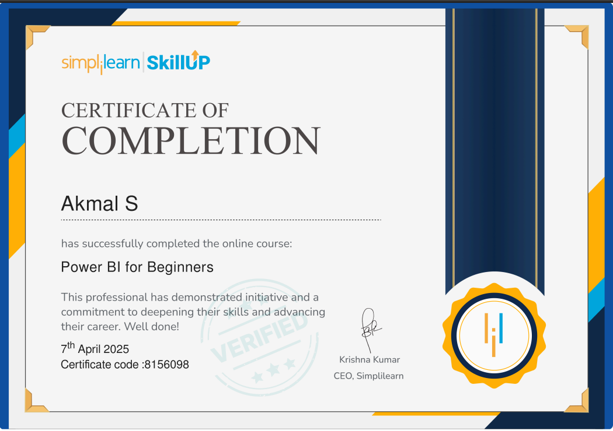
Simplilearn SkillUp · Apr 2025
Bangalore North University · Graduated 2024 · CGPA 8.4/10
INSERT INTO inbox (message) VALUES (?);
Open to Data Analyst roles and freelance dashboard work. Based in India, open to relocation.